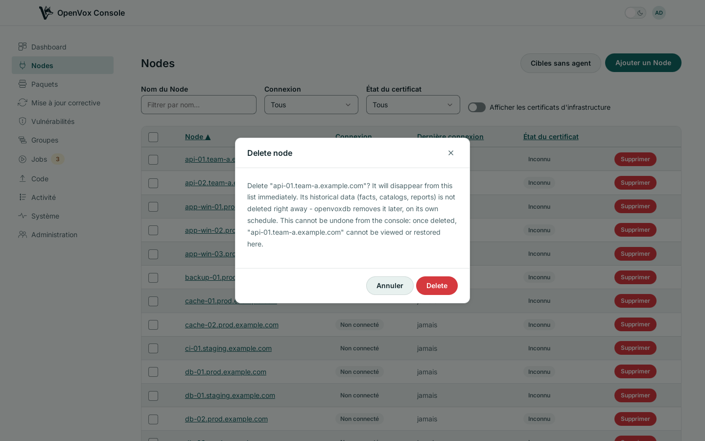

Nodes
Retirer un Node
Supprimer un Node depuis la console : ce que cela fait dans openvoxdb et dans la CA, et ce qui est conservé.
Supprimer un Node
Sur la page Nodes, choisissez Supprimer sur le Node, puis confirmez. Cela nécessite la permission nodes:manage, sur un rôle dont les groupes de Nodes incluent le Node.


La suppression fait deux choses à la fois :
- elle désactive le Node dans openvoxdb, qui n'apparaît donc plus dans le parc ;
- elle nettoie le certificat du Node dans la CA, comme l'action Nettoyer, si bien que le certname ne peut plus jamais s'authentifier et peut s'enrôler à nouveau.
Les deux moitiés sont nécessaires pour que le Node disparaisse de la page, qui liste les Nodes connus d'openvoxdb et ceux connus de la CA. Si la console n'a pas d'identifiant d'administration des certificats, seule la moitié openvoxdb a lieu, et le Node peut continuer d'apparaître à travers son certificat.
Avant de supprimer une machine que vous retirez du service, arrêtez son agent de Node et son agent Puppet, ou désinstallez-les, pour qu'elle n'envoie plus de Report et ne se reconnecte plus.
Ce que la suppression ne fait pas
- Il n'efface pas immédiatement l'historique du Node. Ses Facts, catalogues et Reports restent dans openvoxdb jusqu'à ce que le ramasse-miettes d'openvoxdb lui-même les supprime, selon son propre calendrier.
- Il n'existe pas de liste des Nodes supprimés. openvoxdb exclut les Nodes désactivés de toutes ses listes, et la console ne tient aucun registre à part : un Node supprimé disparaît donc des pages de la console.
Faire revenir un Node
Le certificat d'un Node supprimé a été nettoyé : le faire revenir revient donc à ajouter un nouveau Node. Relancez le script d'installation sur la machine et signez sa nouvelle demande. Voir Ajouter des Nodes.